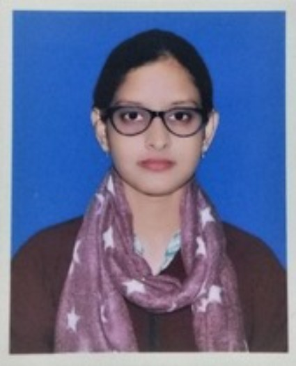

Suraiya Firdaus

Summary
A highly technical and analytical Software Engineer, looking to work
at an entry-level position in an organization that offers good growth
opportunity. To get an opportunity where I can make the best of my
potential and contribute to the organization’s growth.
Contact
9113718938
suraiyaf045@gmail.com
Patna,India
https://www.linkedin.com/in/s-firdaus-69a831268/
https://github.com/S-1710
Hobbies
Painting Art & Craft, Watching series,
Team or Individual Sports, Problem Solver, competitive programming,
web development
Content
Education
Bachelor in technology(Computer science)
Maulana Azad College of Engineering &
Technology, Patna
08/2018 - 07/2022
8.73 CGPA(up to 8th sem)
Class XII (BSEB)
St. Joseph's Convent High School, Patna
2017
72%
Class X (CBSE)
Nezamia Public School, Jamaluddin Chak, Danapur, Patna, Bihar
2015
9.4 CGPA
Skills
Awards, certifications, or other achievements
ACHIEVEMENTS
- PrepSAT (04/2023)
Competitive program, Got 256 out of 90678 participants. Newton School(CodeRush March 2023) (03/2023)
- Competitive program, Got 415 out of 2100+ participants. GeeksForGeeks(The Easiest Ever Coding Contest)
(03/2023)
- Competitive program , Got 65 rank out of 1500 participants
CERTIFICATES
- Certificate of Appreciation(12/2018)
- Volunteered for American Federation of Muslims of India(AFMI)